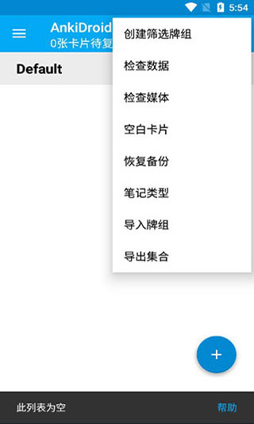

AnkiDroid 藏得最深的 4 个功能，用了三年才发现第一个
你以为 AnkiDroid 只是手机上的卡片翻页器？其实它藏着自定义学习会话、折叠屏自动适配、平板两栏布局、笔记模板自定义这四个大招——每个都能把复习效率拉高一截。
我用 AnkiDroid 复习日语 N2 和 CPA 经济法已经三年了。三年里每天打开它、划卡片、点 Again/Hard/Good，日子过得跟流水线似的。直到上个月翻AnkiDroid文档才发现——我居然把它当成了一个纯粹的"移动卡片翻阅器"，而它藏着的那些功能，每一个都能让复习体验上一个台阶。
这篇就聊聊我挖到的四个宝贝，按"我发现它们的先后顺序"排列，越往后越冷。
一、长按牌组出来的菜单，藏着一整个临时复习系统
牌组列表里，你是不是每次都是点一下牌组名直接进入学习？我之前也是，甚至没去它的官网翻过任何介绍。直到某天手指不小心按久了弹出一个菜单——里面有个叫"自定义学习"的选项，我才意识到原来 AnkiDroid 给我留了这么大一个后门。
长按任意牌组，选自定义学习，会弹出几种预设。我挨个试了一遍，真正有用的是下面四种：
增加今天的新卡上限——默认每天 20 张新卡，考试前一天想多背点怎么办？不用去设置里改牌组选项，直接选这个，输入 50 或者 100，今天就能多刷新卡。重点是明天它自动恢复原值，不会让你第二天的计划炸掉。
增加今天的复习上限——同上，针对复习卡。有时候工作不忙想把积压的到期卡一口气清掉，临时调一下上限就行。
复习整个牌组——这个是我的考前救命稻草。选了之后，不管每张卡下次到期时间是什么，牌组里所有卡片会被拉出来排一遍，答完重新算间隔。考试前一晚把整个 N2 词汇牌组过一遍，比老老实实按计划复习管用多了。
复习特定子集——只拉出标记过的、答错的、搁置的卡片。这个适合专项补短板：上次做错的那些动词变形，今天专门拿出来再练一轮。
它的工作原理是临时创建一个过滤牌组，复习完自动清空，卡片各回各家。我以前一直以为过滤牌组是个需要手动配置的高级功能，没想到长按一下就能用。

二、折叠屏合起是手机，展开自动变平板
我用的是一台内折屏，合起来像普通手机，展开是 7.6 寸小平板。之前担心 AnkiDroid 在展开后会UI错位或者留白，结果展开的那一刻直接给我一个两栏布局——左边是牌组列表，右边是学习屏幕。
完全没在设置里开任何东西。AnkiDroid 从 2.23 版本开始自动适配折叠屏，检测到屏幕宽度超过 600dp 就切两栏，低于就切回单栏。折起来变手机、展开变平板，切换过程不会杀进程，当前复习到第几张都能续上。
外折屏（那种有个小外屏的翻盖折叠机）也支持。合着的时候外屏上能看到复习计数和一个"开始复习"按钮，展开后内屏正常进入学习界面。
展开状态下的体验确实不一样：左栏能同时看到其他牌组还有多少卡到期，不用退出当前会话去数；卡片编辑界面变成了左栏选笔记、右栏编辑的双窗口模式——比手机上的弹窗式编辑好太多了。分屏还能一边复习一边开词典查单词，效率翻了倍。
三、平板上的两栏布局，不只是"变宽了"那么简单
如果你手里有 7 寸以上的平板（横屏模式下效果最佳），AnkiDroid 会自动启用两栏布局。我在平板上对比过单栏和两栏的区别——单栏就是手机界面的放大版，两栏则是完全不同的导航逻辑。
两栏布局下，左栏固定显示当前导航上下文（牌组列表、卡片浏览器的搜索结果、笔记列表），右栏动态显示内容（学习屏幕、卡片详情、编辑表单、统计图表）。切换页面时左栏不动，右栏换内容。
我最常用的三个场景：
同时刷多个牌组。CPA 经济法 20 张到期，CPA 会计 15 张，左栏能同时看到两个牌组的到期计数，想换着刷直接点，不用退出再进。
卡片浏览器里筛错的。左栏选搜索条件（tag:错题 + rated:1），右栏实时显示命中的卡片，一张一张点过去重练。
笔记编辑。之前在手机上改卡片，每次都是弹窗覆盖整个屏幕，改完点保存再弹下一张。平板两栏模式下左栏点哪张右栏就编辑哪张，完全是桌面端的手感。
如果你的平板上还是单栏布局，先确认三个事情：AnkiDroid 是最新版（官方下载拿最新安装包）、屏幕横过来了、系统设置里有没有强制应用使用大屏布局的选项。
四、笔记字段和模板，是 Anki 最被低估的自定义能力
最后这个跟设备无关，是关于 AnkiDroid 的笔记制作系统。Anki 的"笔记"和"卡片"不是一回事——一条笔记可以生成多张卡片，笔记里存的是数据（字段），卡片模板决定怎么展示这些数据。
默认的"基础"笔记类型只有两个字段：正面和反面。但你可以随时加新字段、删旧字段、改字段名。比如我给日语词汇牌组加了一个"例句"字段和一个"词性"字段，模板里把词性显示在卡片正面下方、例句显示在反面。这样一张卡上的信息密度就上来了。
改字段在"管理笔记类型"界面，点字段区域就能看到新增、删除、重命名、调整顺序四个操作。这里有个坑要提醒：删字段是不可逆的，Anki 不会二次确认，删了就是删了，字段里所有笔记的数据一起消失。改字段名的时候，模板里引用旧名字的地方也要同步改，不然模板渲染会断。
模板用 {{字段名}} 语法引用字段内容，支持条件判断——{{#词性}}...{{/词性}} 表示只有词性字段不为空时才显示那段内容。还能在模板里加 CSS 样式、嵌入 JavaScript 做动态效果（比如点击隐藏答案）。
不过说实话，复杂的模板编辑我都转到桌面端的 Anki 上做——桌面版有实时预览面板和语法高亮，写 HTML 舒服多了。AnkiDroid 里改完模板点保存就能同步，下次打开手机端自动用新模板渲染所有卡片，不用手动导入导出。
哪个坑别踩
自定义学习的临时过滤牌组虽然会自动清空，但"自动"是在你复习完整个过滤牌组之后触发的。如果中途退出去做别的事（接个电话、切到另一个 App 忘了回来），那个临时牌组会留在牌组列表里，下次点进去还能继续复习。倒不是 bug，就是别让它积着，回头忘了哪个卡是从临时牌组里出来的。
还有折叠屏的已知限制：部分机型的外屏通知显示不完整，折叠屏社区维护者主要在 Galaxy Fold 和 Pixel Fold 上测试，其他小众机型可能有 UI 错位。如果遇到了，先升级到最新版，不行就去 Anki Forums 搜你的机型加 AnkiDroid。
最后
AnkiDroid 作为 Anki 的 Android 客户端，一直被定位成"移动复习"——好像只是把桌面版的功能搬到手机上。但它藏着的这些功能告诉我们，移动场景下有移动场景的用法：长按的快捷菜单、折叠屏的自动适配、平板的双窗口模式，这些都是桌面端没有的。
三年了才挖到这四个，也不知道还有多少没发现的。把它用透，比再找十张牌组管用。顺手说一句，这套资料我在GitHub、Gitee、GitCode三个仓库都放了一份备份，想随手翻的时候哪个方便用哪个。